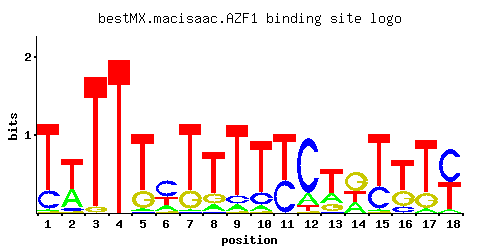

AZF1
YOR113W
Zinc-finger transcription factor, involved in induction of CLN3 transcription in response to glucose; genetic and physical interactions indicate a possible role in mitochondrial transcription or genome maintenance
Best-performing DNA-binding model.

View and copy the recommended matrices ↘
A | 0.014 0.332 0.001 0.001 0.027 0.180 0.014 0.111 0.069 0.069 0.001 0.152 0.235 0.250 0.014 0.001 0.055 0.042 C | 0.216 0.064 0.001 0.001 0.015 0.549 0.007 0.015 0.098 0.181 0.416 0.764 0.015 0.001 0.299 0.125 0.007 0.540 G | 0.007 0.022 0.042 0.001 0.223 0.049 0.216 0.181 0.015 0.015 0.001 0.015 0.181 0.500 0.007 0.292 0.216 0.001 T | 0.763 0.582 0.956 0.997 0.735 0.222 0.763 0.693 0.818 0.735 0.582 0.069 0.569 0.250 0.680 0.582 0.722 0.417
A | 1 33 0 0 2 18 1 11 6 6 0 15 23 25 1 0 5 4 C | 21 6 0 0 1 54 0 1 9 18 41 76 1 0 29 12 0 54 G | 0 2 4 0 22 4 21 18 1 1 0 1 18 50 0 29 21 0 T | 76 58 95 99 73 22 76 69 81 73 58 6 56 25 68 58 72 41
A | -3.13 0.04 -5.77 -5.77 -2.47 -0.58 -3.13 -1.06 -1.53 -1.53 -5.77 -0.74 -0.31 -0.25 -3.13 -5.77 -1.76 -2.03 C | 0.18 -1.03 -5.19 -5.19 -2.48 1.12 -3.25 -2.48 -0.61 0.01 0.84 1.45 -2.48 -5.19 0.51 -0.36 -3.25 1.10 G | -3.25 -2.10 -1.46 -5.19 0.21 -1.30 0.18 0.01 -2.48 -2.48 -5.19 -2.48 0.01 1.02 -3.25 0.48 0.18 -5.19 T | 0.87 0.60 1.09 1.14 0.83 -0.37 0.87 0.77 0.94 0.83 0.60 -1.53 0.58 -0.25 0.75 0.60 0.81 0.26
Alternative candidate matrices 3
Historical matrix candidates from the original ScerTF database. Expand a source to inspect its original logo, scores, and matrix values.
AZF1Badis et. al.P = 8.74e-05View matrix ↘
AZF1Foat et. al.P = 5.88e-05View matrix ↘
AZF1Harbison et. al.P = 4.84e-13View matrix ↘
Gene-level annotations and interactions.
Genes bound in ChIP-chip experiments 97 genes
YAL032C, YAL037W, YAR009C, YAR019C, YAR023C, YBL029W, YBL074C, YBR157C, YBR158W, YBR159W, YBR230C, YBR281C, YBR282W, YDL037C, YDL122W, YDL245C, YDL246C, YDR001C, YDR002W, YDR006C, YDR007W, YDR042C, YDR257C, YDR259C, YDR441C, YDR442W, YDR524C, YDR525W, YDR526C, YEL047C, YEL050C, YEL055C, YEL062W, YEL063C, YER001W, YER007C-A, YER097W, YER098W, YER101C, YER102W, YFL034W, YGL001C, YGL012W, YGL013C, YGL115W, YGL135W, YGL136C, YGL189C, YGL195W, YGR001C, YGR084C, YGR085C, YGR190C, YHL034C, YHL041W, YIL014W, YIL015C-A, YIL056W, YIL099W, YIR020C, YJL048C, YJL148W, YJL191W, YJL192C, YJR100C, YJR158W, YLL019C, YLL020C, YLR023C, YLR027C, YLR074C, YLR075W, YLR166C, YLR167W, YLR367W, YLR368W, YLR413W, YML007W, YML008C, YML124C, YNL111C, YNL145W, YNR050C, YOL121C, YOR032C, YOR102W, YOR106W, YOR108W, YOR272W, YOR315W, YOR360C, YOR369C, YPL130W, YPL143W, YPR010C, YPR013C, YPR080W
Genes affected by TF deletion 18 genes
YPL016W, YML089C, YNL300W, YEL050C, YKL119C, YOL150C, YOR298W, YBL061C, YBR296C, YMR027W, YOR367W, YOL151W, YPL159C, YEL038W, YLR079W, YPR008W, YOR034C, YMR306W
Genes supported by both experiments 1 genes
YEL050C